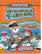

Путешествие на айсберге

Далеко на севере, где-то в Архангельской или Вологодской области, есть небольшая деревня Дедморозовка, в которой живут Дед Мороз и его внучка Снегурочка. А еще - помощники Деда Мороза - снеговики и снеговички.Придумал эту деревню замечательный детский писатель Андрей Усачёв. Великолепный детский художник-иллюстратор Виктор Чижиков нарисовал жителей Дедморозовки, а талантливые художницы Екатерина и Елена Здорновы помогли Виктору Чижикову создать рисунки к книге.Всю зиму снеговики и снеговички учатся в школе, а весной ложатся в спячку. Но только не в этот раз! Дед Мороз уже задумал отправиться вместе со своими помощниками в самое немыслимое путешествие. И пусть Новый год позади, но приключения Деда Мороза только начинаются!